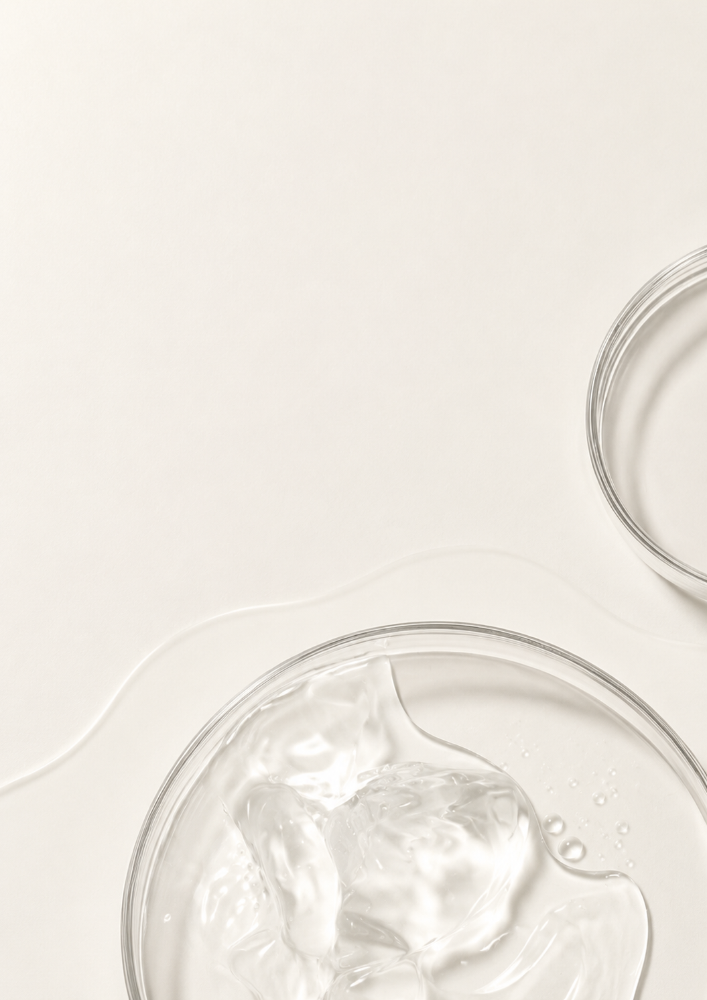
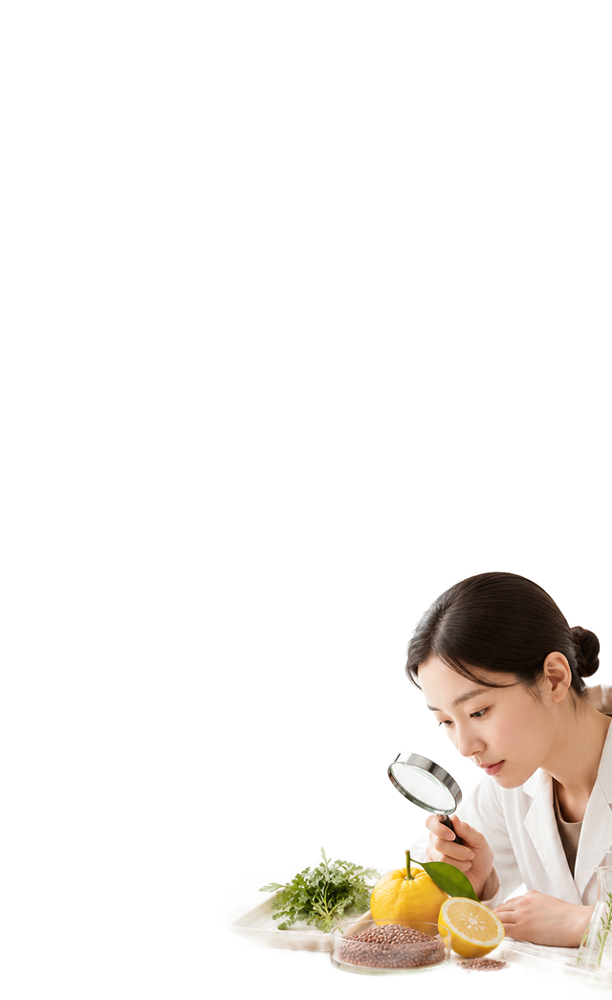
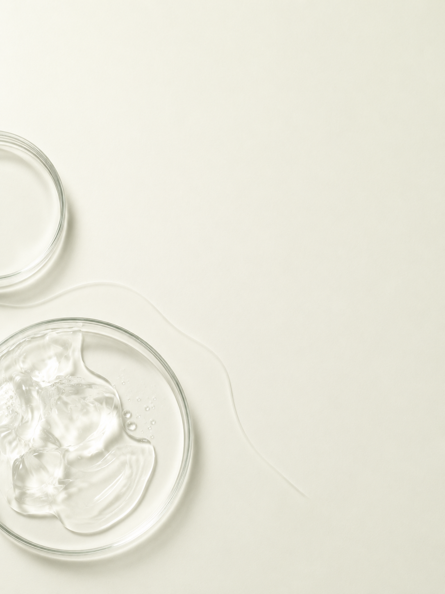
원료에 대한 이유 있는 고집
한율이 원료에 민감한 이유

민감한 피부를 위해선 무엇보다
원료 선별의 중요성을 우선시합니다.
빠른 효과만 추구하는 것이 아닌,
궁극적인 피부 본연의 건강을 추구합니다.
현대 기술의 접목 시키기 위해선 무엇보다
까다로운 선별을 통한 기초 원료를 중요시합니다.

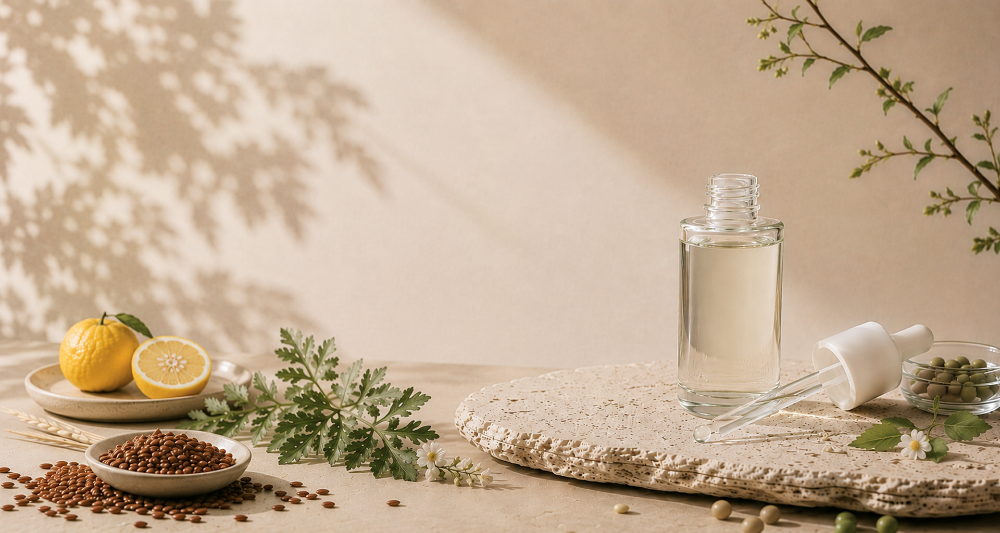
피부가 가장 편안한 국내 청정지역의 자연원료와
차세대 첨단 기술로 만들어낸
고효능 뷰티 브랜드, 한율
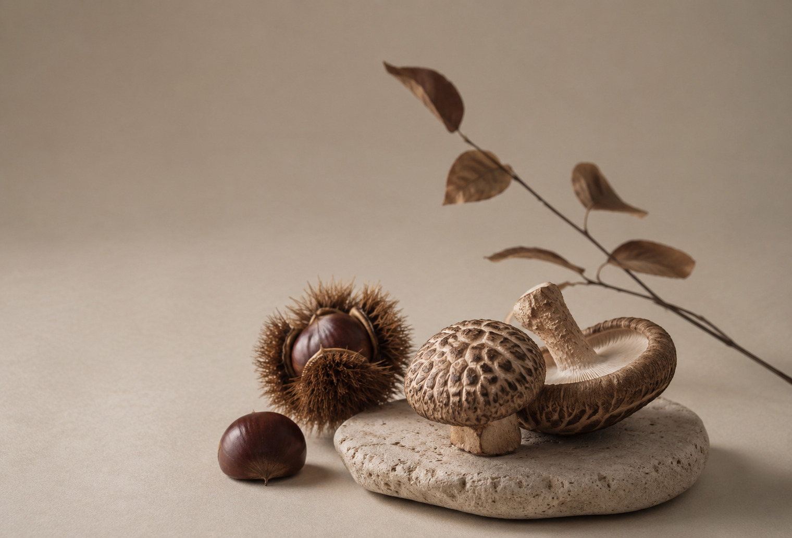
한국 원료의 힘을 피부에 연결시키는 현대 기술
한율의 기술 축은 한국 자연 원료와 발효 기술의 결합입니다.
혹독한 사계절의 변화를 견디며 생명력을 유지하는 한국 자연 원료의 힘을 피부에 전달한다는 것,
한국 발효 식품에서 찾은 성분을 마이크로바이옴 기술로 개발한 포스트바이오틱스 Skin Balancer™ 핵심 기술입니다.
단순히 국산 원료를 쓰는 브랜드가 아닌, 다음 단계로 나아가는 기술
한국 자연 원료를 현대적인 발효 기술과 연결해 피부 건강을 관리하는 ‘자연 원료의 재해석’ 입니다.



원료에 대한 이유 있는 고집
민감한 피부를 위해선 무엇보다
원료 선별의 중요성을 우선시합니다.
빠른 효과만 추구하는 것이 아닌,
궁극적인 피부 본연의 건강을 추구합니다.
현대 기술의 접목 시키기 위해선 무엇보다
까다로운 선별을 통한 기초 원료를 중요시합니다.
다양한 피부를 위한 다양한 답변
한율은 수 많은 연구 끝에 원료와
현대 기술을 연결해내는데 성공했습니다.
우리 한율은 발효 식품에서 찾은 성분을
마이크로바이옴 기술과 결합해
최고의 화장품을 선보입니다.
피부의 다양한 고민들을 다양한 원료의
특성을 살려 피부의 맞는 제품을 제공합니다.
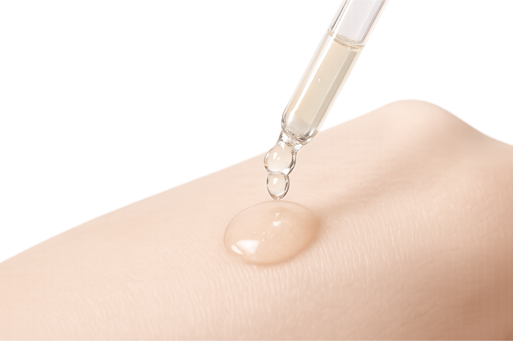
피부에 닿기 전 마지막 검증

피부에 직접 닿는 모든 원료는 흡수감과
피부 친화성을 중심으로 세심하게 검증합니다.
편안한 사용감과 균형 잡힌 효능을 위해 반복적인
테스트와 연구를 지속하며 피부가 안심하고
사용할 수 있는 제품을 완성합니다.
자연이 가진 순한 힘을 믿기에, 모든 과정은
더 세심하고 정직하게 이어집니다.
흡수율에 따른 효능 차이
우리가 바르는 대부분의 화장품은 피부층에 제대로 도달하지 못하고
피부 표면에서 그대로 증발해 버립니다.
그래서 제품을 장기간 사용을 해도 효과를 느끼지 못하는 경우가 많습니다.
한율은 한국 여성의 스킨케어 습관에서 착안한 ‘Everyday glass skin’과
‘K-beauty Recipe’를 통해 기존 화장품에 대한 문제점을 해결하고자 합니다.
피부에 도달하지 못하고 순간만 빛나는 일시적인 효과가 아닌
현대 기술을 사용한 방식으로 흡수율을 높혀, 피부 본연의 건강과 빛을 찾는데 집중합니다.
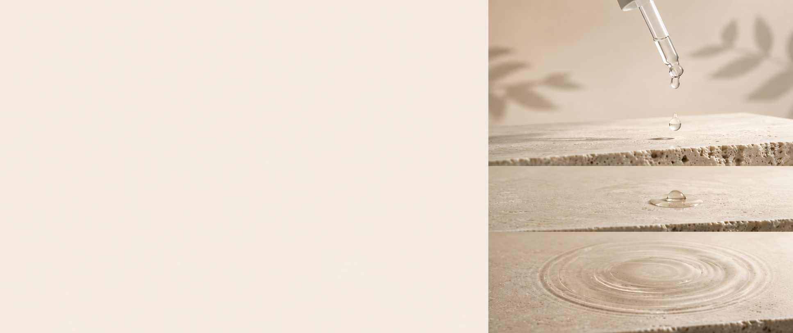
피부로 느껴지는 변화
한율의 스킨케어는 피부 고민마다 가장 효과적인 자연원료와
고함량 액티브 성분으로, 피부에 빠르게 흡수돼
단기간에 효과를 볼 수 있습니다.
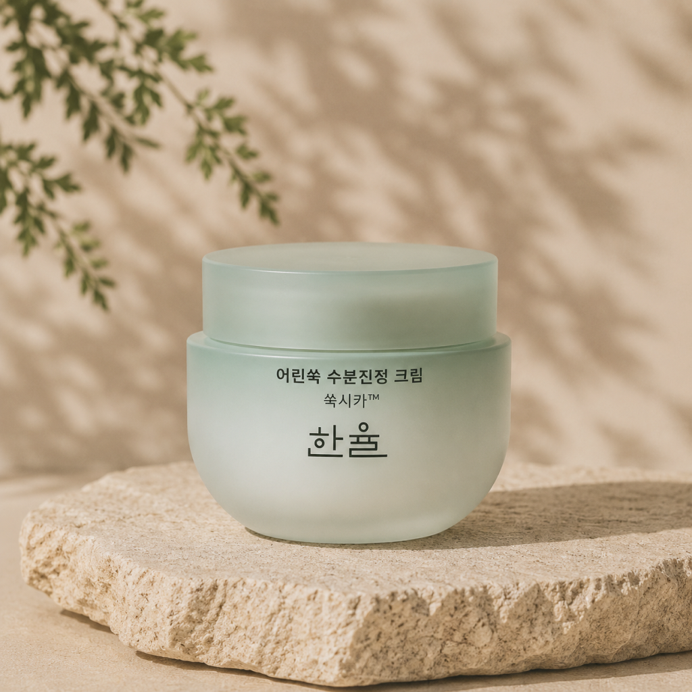
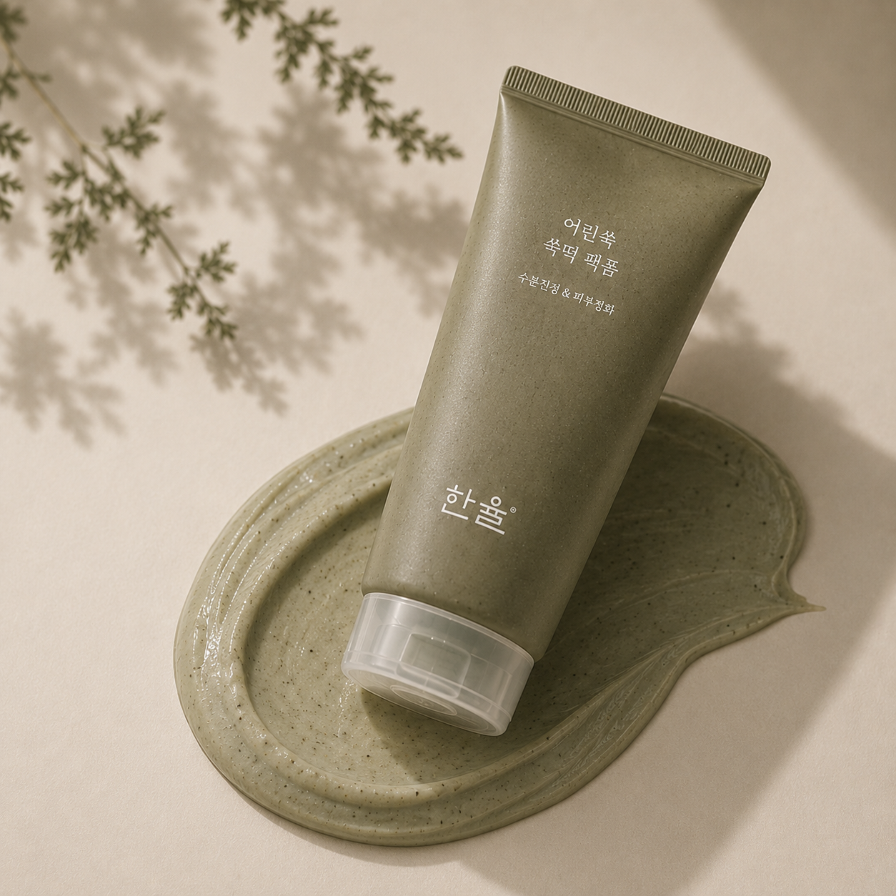
피부에 편안한 처방
민감한 피부에 메이크업은 자극을 주어 피부를 더욱 더 민감하게 만듭니다.
한율은 민감한 피부도 걱정없이 사용하기 위해 다양한 원료를 찾아다닙니다.
피부 부담을 줄이기 위해 원료 선택부터 발효 기술을 이용한 제품까지
모든 과정을 거쳐 다양한 피부 고민을 해결할 방안을 모색합니다.
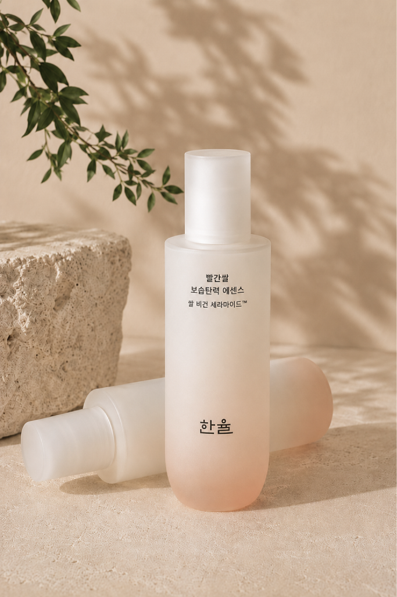
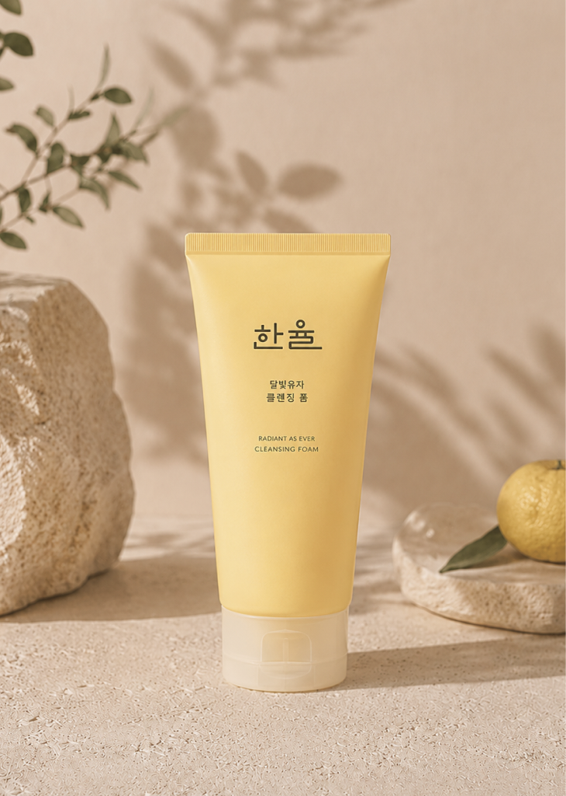
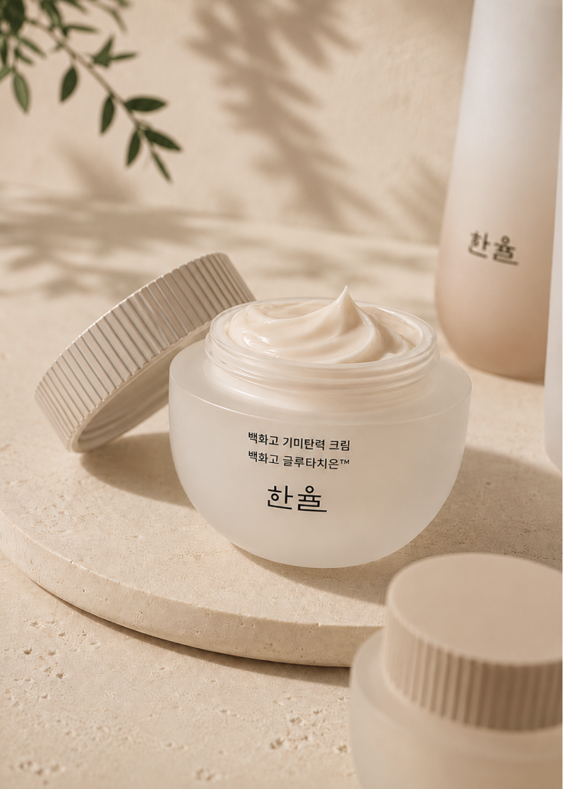